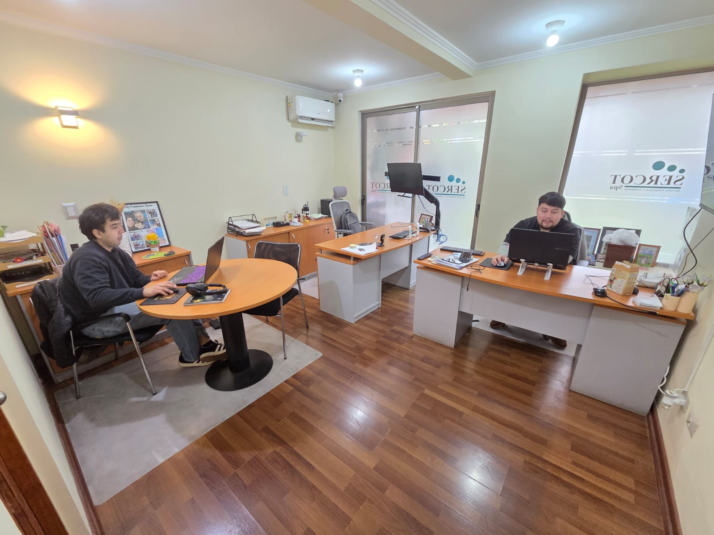

SOMOS SERCOT
Contabilidad con criterio.
Relaciones con confianza.
Somos un equipo de servicios contables y tributarios. Acompañamos a empresas y profesionales para ordenar su actividad y comprender sus decisiones.

NUESTRA FORMA DE TRABAJAR
Escuchar también
es parte del servicio.
Detrás de cada declaración hay una actividad, personas y decisiones. Por eso buscamos que la información contable tenga sentido para quien la necesita.
Trabajamos con médicos, empresas y negocios del rubro del reciclaje. Nuestra propuesta reúne gestión periódica y asesorías para situaciones que requieren una mirada específica.
Conoce nuestras especialidades →